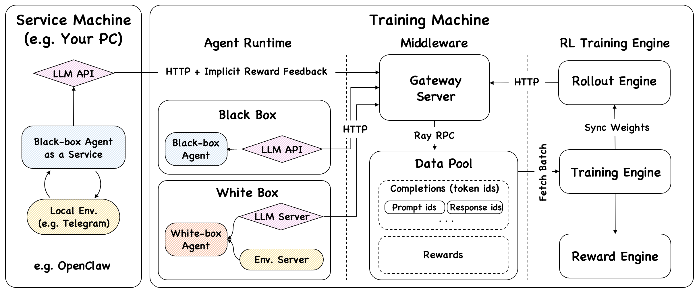

OpenClaw 之后，Agentic RL 有了新训练范式
Claw-R1：将真实 Agent Runtime 与 RLVR 训练深度结合，
为下一代 Agentic AI 提供完整的强化学习训练基础设施。
中国科学技术大学 · 认知智能全国重点实验室
Claw-R1：将真实 Agent Runtime 与 RLVR 训练深度结合，
为下一代 Agentic AI 提供完整的强化学习训练基础设施。
中国科学技术大学 · 认知智能全国重点实验室
近年来，大模型技术的发展正在推动 AI 从「回答问题」逐渐迈向「执行任务」。 在 Agentic AI 的世界里，大模型不再只是文本生成器，而是通过调用工具、环境交互、 多步推理来执行复杂任务的智能体。
然而，当 Agent 能够在真实环境中运行时，一个新的问题随之出现： 我们应该如何训练这样的 Agent？
中国科大认知智能全国重点实验室提出的 Claw-R1 项目， 正是针对这一问题提出的全新强化学习训练框架。它尝试将前沿的 Agent Runtime（如 OpenClaw） 与强化学习训练框架深度结合，为 Agentic AI 提供全新的训练基础设施。
大模型强化学习正经历一次重要转变：从人类偏好学习（RLHF）， 到任务结果学习（RLVR），再到环境交互学习（Runtime RL）。
| 阶段 | 目标 | 奖励来源 | 代表工作 |
|---|---|---|---|
| RLHF | 生成更符合人类偏好的文本 | Human preference | InstructGPT |
| RLVR | 完成可验证任务 | Verifiable reward | VERL、Agent-R1 |
| Runtime RL 本项目 | 在真实环境中行动 | Environment feedback | Claw-R1 |
总趋势：AI 的奖励来源正在越来越接近真实世界。
尽管 RLVR 已能支持多轮交互学习，但仍存在一个关键问题： Agent 运行环境并不真实。
目前大多数 RLVR 框架依赖研究导向的模拟环境：
这些都是特定任务的训练场，而非真实的 Agent Runtime。 模型从未真正运行在现实工具系统中，导致在真实 Agent 系统中出现 工具调用混乱、规划能力不足、长任务不稳定等问题。
OpenClaw 是一款开源的个人 AI Agent 操作系统（MIT 协议，TypeScript 实现，本地优先原则）。 自发布以来，8 周内获得超过 236,000 个 GitHub Star， 成为开源历史上增长最快的项目之一。
其核心架构采用 Hub-and-Spoke 设计：15+ 主流消息平台通过统一 Gateway 接入， 驱动中央的 Pi Agent Runtime 执行任务。Lane Queue 机制通过串行执行消除并发竞态条件， 三层混合记忆系统则为 Agent 提供稳定的上下文管理能力， 使 OpenClaw 成为第一个可在真实消息环境中自主、持续运行的 Agent 平台。
Claw-R1（OpenClaw-RL）构建了一个完整的 Agent Runtime + RLVR Training Loop 系统。 整体系统分为三个核心部分：

Rollout Engine（生成）与 Training Engine（训练）异步运行，互不阻塞，数据流入 DataPool 后自动拉取批次更新模型。
OpenClaw 在本地机器提供服务，模型训练在高性能服务器上独立进行。无需预置数据集，边服务边训练。
OpenClaw 只需将 base_url 指向 Claw-R1 的 Gateway，框架自动采集交互数据并训练，无需修改 Agent 逻辑。
通过 OpenAI 兼容接口，支持白盒离线、黑盒离线、黑盒在线服务三种运行模式，适配多种部署场景。
Claw-R1 的意义在于：它为 Agent Runtime 时代的强化学习训练 提供了此前从未有过的基础设施。
Agent 的运行环境问题——让 Agent 能在真实消息平台中持续、自主地执行任务。
Agent 的训练框架问题——让模型能以真实环境反馈为奖励信号进行强化学习。
两者结合，正是大模型强化学习第三阶段的核心体现： Runtime RL —— 以真实环境反馈为奖励，让模型学会在现实中行动。
在这种范式下，AI 不再只是学习生成文本，也不再只是完成孤立的可验证任务，而是学习 如何在真实 Agent Runtime 中持续、稳定地完成复杂任务。
随着 Agent 技术的发展，大模型系统正逐渐演化为：
提供执行环境
提供学习机制
提供训练基础设施
这些技术的结合，很可能将成为下一代 Agentic AI 系统的基础架构。 而 Claw-R1，正是这一方向上的一次重要探索。
如果本项目对您的研究有所帮助，请考虑引用：